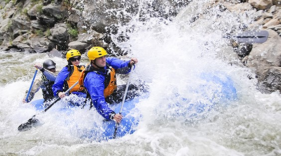
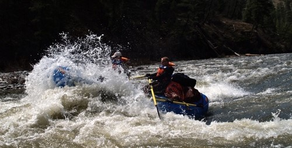
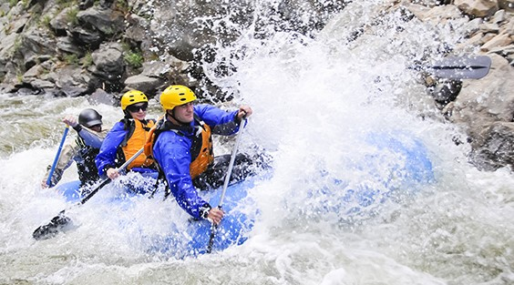
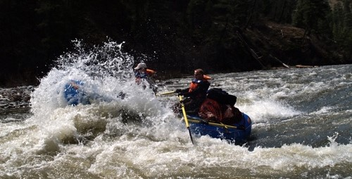

Our Purpose: At White Water Rafting, we aim to provide the most thrilling yet safe outdoor adventures. Our Mission: To create unforgettable whitewater experiences while fostering teamwork and respect for nature. Our Creed: "Explore fearlessly, paddle together, and embrace the wild." Our Motto: "Ride the Rapids, Feel Alive!"

White Waters Rafting
History
Whitewater rafting has a rich history dating back centuries. Indigenous communities and early explorers used rafts to navigate rivers for transportation and trade. The sport as we know it today began in the mid-20th century with military-grade rubber rafts. Over time, advances in raft technology and the rise of adventure tourism transformed rafting into the thrilling activity we love today. Whether it's navigating the Grand Canyon or the Zambezi River, whitewater rafting continues to attract adventure seekers worldwide.
Adventure Awaits You


 


